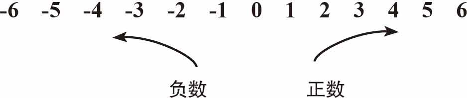
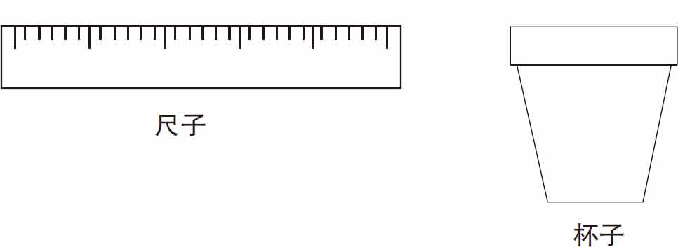
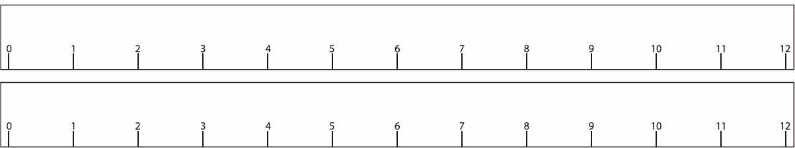
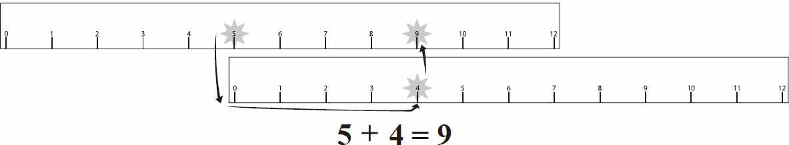
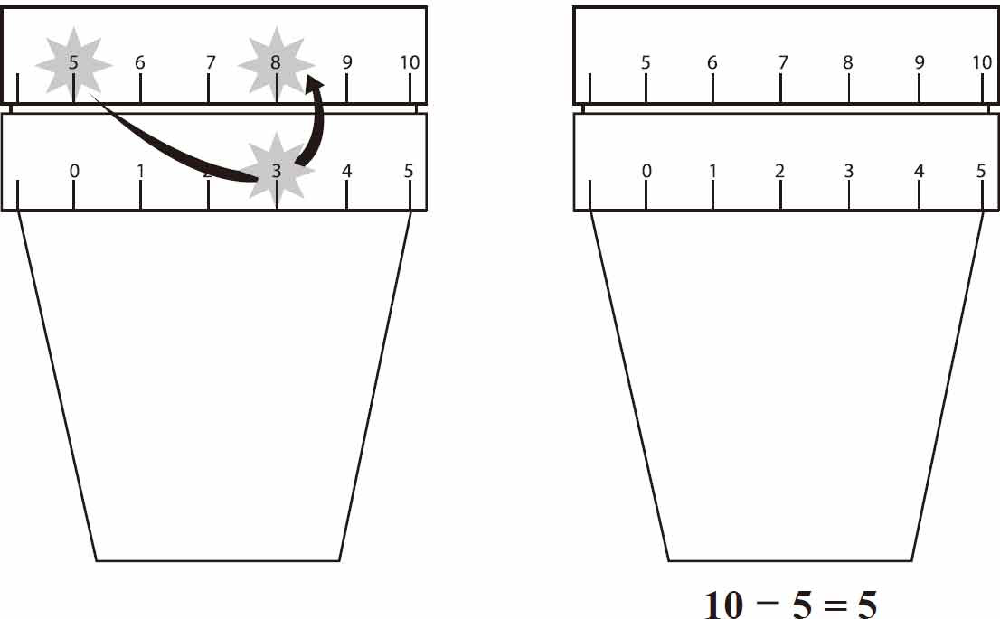
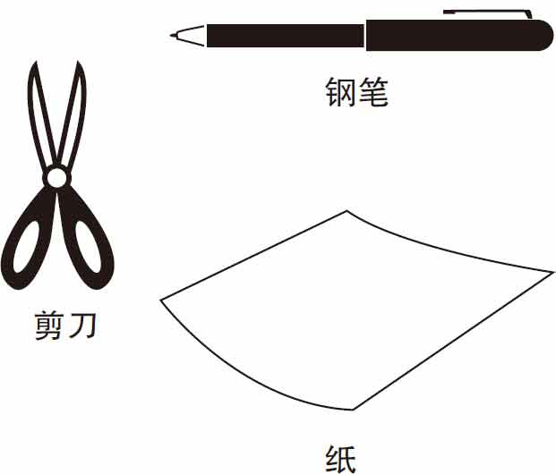
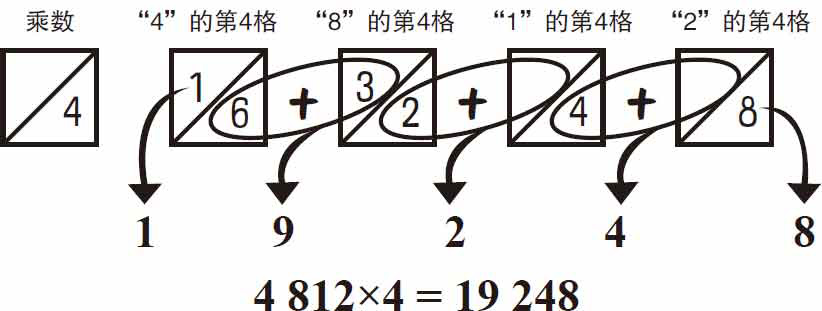
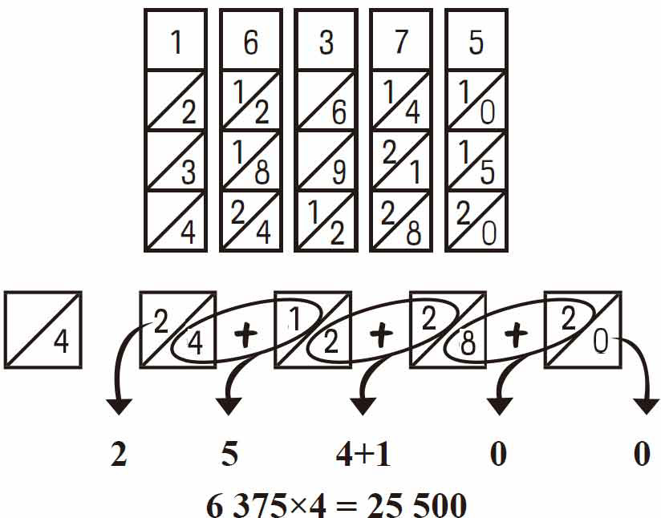

图1-4
■正数、负数和零被称为整数。
把数字排在一条线上，负数在零的左边，正数在零的右边。

下面是加、减、乘、除法则。
■正数加上或减去一个比它小的正数仍然是正数：
4-2＝2
■当加上或减去一个较大的数时，较大的数的符号就是结果的符号：
-7＋1＝-6
■当两个数相乘或相除时，同号＝正数 异号＝负数
同号＝正数
–÷– 或 –×– 或 ＋×＋ 或 ＋÷＋
无论乘多少个数，偶数个负（-）数相乘都会得到一个正数，奇数个负（-）数相乘结果都会是负数。
规则
4-2＝2 -7＋1＝-6 8-（-3）＝11
双重否定——两个负数相加跟正数相加的方法一样，结果取负号
-2-4＝-6如同（-2）＋（-4）＝-6
乘除
| 同号＝正数 | 异号＝负数 |
| –÷– | –÷＋ |
| –×– | –×＋ |
| ＋×＋ | ＋÷– |
| ＋÷＋ | ＋×– |
例如：
| -2×2＝-4 | -2×（-3）＝6 |
| 6÷（-2）＝-3 | 4×3＝12 |
| -4÷2＝-2 | 6÷（-3）＝-2 |
| 7×（-4）＝-28 | -8÷（-2）＝4 |
你可以准备两把尺子，把它们竖着排列放在杯子上，做成一个简单的加法装置。
需要准备的东西：
►两把尺子
►一个杯子

如图1-1所示，将两把尺子竖着排在一起，上面尺子的刻度表示相加的第一个数（如5），下面的尺子的刻度表示相加的第二个数（如4）。将下面的尺子的0刻度对准上面尺子的刻度所代表的数字，最后下面的尺子的刻度所在的位置对应的上面的尺子的刻度就是相加后的值，如5＋4＝9，见图1-2。

图1-1

图1-2
执行反向操作，进行减法运算。
如图1-3所示，将两把尺子竖着排在一起，上面尺子的刻度表示相减的两个数（如8和5），下面的尺子的刻度表示，上面两数相减的结果（如3）。将下面尺子的0刻度对准上面尺子的刻度所代表的数字（注意：是对准减数，即减号后面的那个数，减号前面的数称为被减数），最后下面的尺子的刻度所在的位置对应的上面的尺子的刻度（被减数的刻度）就是相减后的值，如8-5＝3。

图1-3
苏格兰数学家约翰·纳皮尔发现了对数并且发明了一个简单的计算器来乘以任意两个数。这种的计算器被称为“纳皮尔的骨算筹”，因为它可以由骨、纸等材料做成。
需要准备的东西：
►纸
►钢笔
►剪刀

用剪刀剪出十条纸带，每条纸带用横线分为九行，从第二行开始，每个框都用一条斜线将十位数字与个位数字分隔开。如图1-4所示，动手绘制纸带。
图1-4
计算4812×4，先把第4条、第8条、第1条和第2条纸带按顺序对照排列，根据乘数4，将这四条纸带从上往下竖着数第四格的数字标记出来。如图1-5所示。将斜线两侧的数字交错地加起来，我们就得到了运算的答案。4812×4＝19248。

图1-5
图1-6显示了6375×4的计算过程和结果。

图1-6
注意：当对角线上的两个数字相加的值等于十或大于十时，左边列上的数值加1。这就是为什么6375×4的结果是25500而不是254100。